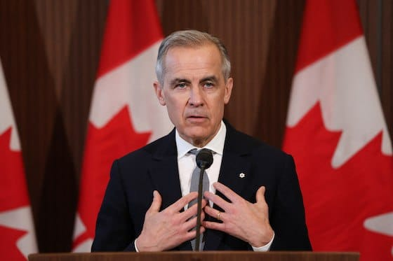

世界苦茶03月28日新闻 | 35条 | 加拿大欧洲与美国的贸易争端紧张

加拿大欧洲与美国的贸易争端紧张 | 加拿大首相称与美国密切时代结束 | 《大西洋》公布美国对胡塞武装全记录 | 中国前两月工业利润继续下降 | 台湾军舰与中国渔船擦撞
三个水枪手
苦茶数据
美元兑人民币：7.27（昨日7.26，前日7.26）
美元兑日元：150.81（昨日150.16，前日150.11）
上证指数：3349（昨日3379，前日3371）
标普500指数：5693（昨日5712，前日5776）
比特币：86780（昨日87529，前日87648）
布伦特原油：74.01（昨日73.88，前日73.34）
中国新闻
• 林卓廷等元朗案被告全体上诉 ：香港前立法会议员林卓廷等七人涉2019年元朗袭击案件被判罪成后，均提起上诉。综合香港《明报》《星岛日报》报道，林卓廷等七人被指于2019年7月21日在港铁元朗站内参与暴动，今年2月27日被判暴动罪成，其中林卓廷被判监禁37个月，其余六人则被判监禁25至31个月。法庭资料显示，继林卓廷等六人提出上诉后，最后一名被告陈永晞也不服判决提起上诉。换言之，元朗暴动案的七名“非白衣人”均已提出上诉，案件暂无聆讯日期。
• 刘振亚抖音粉丝两天暴增六万 ：因宣扬武统被台湾政府废止居留许可的陆配网红刘振亚离开台湾后，抖音账号粉丝暴涨六万人。综合台湾三立新闻网和《中国时报》报道，抖音账号“亚亚在台湾”在刘振亚星期二离开台湾前，粉丝数为49万7000，但到了星期四，短短两天内，粉丝数暴增六6万，至56万左右。刘振亚上个月被台湾亲绿网红“八炯”举报多次宣扬武统言论，本月被台湾内政部移民署废止依亲居留许可。刘振亚星期二早上到内政部大楼前召开记者会抗议，并表态坚决不会离开，但仍在当晚离境。
• 国防部表示，打击台独图谋正当必要 ：中国大陆国防部说，台湾从来不是一个国家，解放军将全时待战，坚决打掉所有台独图谋。针对台湾总统赖清德日前宣称两岸“互不隶属”，将大陆定义为“境外敌对势力”，解放军3月中旬在台海附近军演是否是对赖清德分裂言论和台美近期勾连动向的反制，中国大陆国防部新闻发言人吴谦星期四在例行记者会上回应说：“天欲其亡，必令其狂。台湾是中国的一部分，从来就不是一个国家，过去不是，现在不是，今后也绝不可能是。”他指出，中国人民解放军东部战区近日位台岛周边海空域组织海空兵力开展战备警巡和联合演训，检验提升部队打仗能力。这是对“台独”分子的有力惩戒，也是对外部干涉势力的严正警告，完全正当、完全必要。
• 中方接手美在柬援助项目 ：美国在2月下旬取消在柬埔寨两个援助项目，一周后，中国对外援助机构宣布将为同类项目提供资助。当时中国驻柬埔寨大使汪文斌在活动上说，“儿童是国家和民族的未来，我们应当共同关注儿童的健康成长”。这两个项目是有关儿童识字教育和改善五岁以下儿童的营养和发育状况。彭博社引述两名无权公开发言的人士说，尽管中方的公告并未透露具体金额，但中方资助项目的类型及其发展目标与美国国际开发署终止的援助项目基本相同。 （翻评：软实力。）
• 法国外长访华会晤王毅 ：法国外交部长巴罗已抵达中国，展开两天访问，星期四与中国外长王毅会面。据路透社报道，王毅和巴罗两人在巨型中法国旗前握手，之后进入北京钓鱼台国宾馆会议室展开讨论。法新社早前报道，巴罗会在星期四与王毅和其他中国官员会面，讨论乌克兰战争、中欧贸易紧张局势等棘手课题。除了北京之外，巴罗也将前往上海。
• 韩称朝正寻求改善对华关系 ：韩国统一部称，朝鲜正寻求改善朝中关系，不过关系改善尚需时日。据韩联社报道，韩国统一部星期四向媒体发布“近期朝鲜动向”。韩统一部称，朝鲜今年的外交重点是俄罗斯，在全方位向俄靠拢的同时，还试图改善与中国的关系。
• 加总理称与中价值观不同应审慎 ：加拿大总理卡尼星期三在新闻发布会上说，在贸易问题上，中国与加拿大的价值观不同，加拿大在促进双边商业关系方面需要非常谨慎。据路透社报道，对于中国大使发表关于促进贸易的评论，卡尼说：“我们可以与亚洲的合作伙伴建立更深层次的关系……但与我们价值观相同的亚洲合作伙伴不包括中国。”中国驻加大使王镝本月强调，中国政府支持中国企业与加方加强经贸务实合作。
• 台海军舰与陆渔船擦撞无伤亡 ：台湾海军中和舰星期四凌晨与中国大陆渔船发生擦撞，双方人员均无损伤。综合台湾《自由时报》和TVBS新闻网报道，台湾海军舰队指挥部星期四上午通报，所属中和军舰当天凌晨12时38分于台中港外海约45海里处执行任务期间，与中国大陆籍渔船“闽连渔61756”擦撞。台海军舰队指挥部当天上午表示，双方人员均无损伤，舰艇受损部分不影响航行安全。
• 谢锋强调，芬太尼合作不应成摩擦点 ：中国驻美国大使谢锋强调，中国为帮助美国解决芬太尼问题付出了巨大努力，并指以芬太尼为借口无端加税，只会把又一个合作点变成摩擦点。中国驻美使馆在官网公布，谢锋星期二在“纪念世界反法西斯战争胜利80周年暨弘扬中美合作飞虎队精神”招待会上致辞时说：“中美社会制度、历史文化不同，过去、现在、将来都是这样，这是必须正视的现实。”谢锋续称，80年前，中美能够超越差异分歧，在同法西斯军国主义的斗争中成为盟友、并肩作战。在两国具有更多共同利益的今天，更应该求同存异，做伙伴而非对手。“80年过去，中美两国都发生很大变化，但中美关系发展的强大民意基础没有变，中美互利合作的广阔空间没有变。”
• 习近平本周将会见宝马、奔驰和高通CEO： 两位消息人士周四称，德国汽车制造商宝马和梅赛德斯-奔驰以及芯片巨头高通全球负责人等外国商界领袖将于本周与中国国家主席习近平会面。这次会议计划于周五在北京举行，北京方面正寻求加强与外商关系，以应对投资下降和美国对华加征关税的局面。此次会议紧随上周末的中国发展高层论坛之后举行。中国总理李强在中国发展高层论坛论坛上重申，欢迎更多外资企业投资中国，将进一步扩大金融、互联网、电信医疗和教育等领域开放。尽管面对特斯拉及比亚迪、小米等中国本土品牌的市场竞争，中国仍是宝马、奔驰、大众等德国车企的重要市场。
亚太印太新闻
• 泰国推动赌场合法化法案 ：泰国内阁批准一项赌场合法化草案，为议会辩论法案奠定基础。泰国认为，法案将吸引数十亿美元的外国投资，并促进旅游业发展。彭博社报道，泰国首相办公室发言人集拉育星期四称，泰国内阁在星期四的会议上批准“娱乐综合体”法案的最新草案。他说，法案目前提议将赌场设在所谓的娱乐综合体中，赌场的占地面积不得超过10%。
• 花莲选民多数反对罢免傅崐萁 ：台湾一项民调显示，同意罢免国民党立法院党团总召傅崐萁的花莲县选民远低于不同意，显示傅崐萁在花莲县的地方实力仍相当稳固。风传媒星期四公布的民调显示，受访花莲县选民中，33.5%的选民同意罢免傅崐萁，47.6%不同意，另有19%未表态。民调还显示，有25.3%的民众同意响应绿营的大罢免行动，全面罢免国民党立委，49.4%不支持，25.3%未表态。
• 台湾Z世代八成不满薪资待遇 ：一项调查显示，台湾Z世代有近八成不满薪资待遇，近五成换过两份以上的工作。综合台湾《经济日报》和《工商时报》报道，1111人力银行星期四发布Z世代生存压力调查结果。调查显示，受访Z世代上班族平均薪资为3万8494元新台币，较去年的3万6040元高出了2454元，但高达77.7％的Z世代上班族不满意薪资待遇。
• 台教师因质疑赖清德言论被约谈 ：台湾台北市立第一女子高级中学老师区桂芝证实，因上中国大陆央视节目受访批评台湾总统赖清德将大陆定义为“境外敌对势力”而被校方约谈。她星期四上午受访时称，自己只是表达一个小老百姓的心声，担心会重回戒严时期。综合中天新闻网和中时新闻网等台媒报道，区桂芝星期三受访时证实，北一女校长陈智源当天找她晤谈，厘清台北市教育局便笺的民众陈情指控。区桂芝说，民众陈情称她上大陆央视“说台湾是中国的”，完全是不实指控。她受访时是对总统赖清德把大陆定义为“境外敌对势力”提出质疑，让他们这些在大陆还有亲人的人如何面对自己的亲人，“是否要切断我们的母女情”，质问赖清德如何面对自己的祖先。 （翻评：这问题是因为你上央视节目涉嫌统战，不是你说这个话。你要是在自己的社交平台批评这些，根本不会有问题。而且校方约谈结果是：经校方查证，区桂芝并未在课堂违反教育中立，尊重教师专业自主及言论自由。是在这里卖什么惨？当然卖惨在民主国家也是言论自由。）
科技新闻
• 库克访问网易总部试玩游戏 ：正在中国访问的美国苹果首席执行官库克现身网易总部，并与网易首席执行官丁磊一起体验游戏。综合观察者网和快科技报道，库克星期三到访网易位于杭州的总部，并参加了网易游戏《燕云十六声》新版本河西区域的线下前瞻体验活动。在网易总部，库克与丁磊一起测试《燕云十六声》在新iPad上的硬件光线追踪技术。库克还赞赏游戏在iPad上的场景实装效果。
• 朝试射AI自爆无人机 ：朝鲜进行了无人侦察机和攻击型无人机的性能革新试验，测试了搭载人工智能技术的自爆型无人机。路透社引述朝鲜中央通讯社的报道称，朝鲜是在领导人金正恩视察大型无人侦察机和预警机的开发情况时，进行自爆无人机试验，自爆无人机从空中飞向军用车辆并爆炸。据称，正在改良的无人侦察机在追踪和监视能力上有所提升，能够探测陆地和海上的各种战术目标和敌方活动。朝鲜媒体星期四报道称，金正恩25日和26日视察了大型无人侦察机和预警机的开发情况。朝中社引述金正恩说：“在武装部队现代化过程中，无人机和人工智能领域应成为首要任务和发展领域。”
• 小红书频繁取位引争议 ：中国社交媒体小红书被指频繁获取用户定位等隐私信息，甚至有用户30天内定位被访问逾七万次。但小红书强调，平台不会泄露用户隐私。综合九派新闻和澎湃新闻星期四报道，有中国网民通过安卓手机的隐私信息查看，发现近30天内小红书应用的隐私访问量高达9万2000次，远超第二名微信的911次，其中定位获取最为频繁，高达7万1000次。这名网民在发现上述情况后，紧急关闭小红书的取用权限，改为“访问时询问”，隔天访问数量才恢复正常。
• 欧盟调查欧洲议会腐败 多名华为说客被拘： 中国科技集团华为被指控给欧洲议会的工作人员好处，让他们为该公司在欧洲的利益行方便。围绕此事展开的腐败调查聚焦足球门票、智能手机和数额几千欧元的礼金。比利时有关部门正在调查华为的说客和欧盟议会助理，据称华为通过送礼的方式换取政治恩惠，当时该公司展开游说，期望不被排除在欧盟5G基础设施之外。此调查于本月早些时候启动，上周已有四人被比利时当局逮捕，并被指控贪污和参与犯罪组织。在被捕的嫌疑人中，有一人曾在欧洲议会担任助理，现在是华为的说客。他涉嫌策划向欧洲议会工作人员行贿，尤其是为几名欧洲议会议员联署的旨在捍卫华为利益的信函争取支持。
财经新闻
• 日本要求美豁免汽车关税 ：日本首相石破茂对美国加征汽车关税25%的决定表示深切遗憾，并指示相关官员坚持不懈地为日本的豁免关税进行谈判。当地媒体《日经新闻》报道，石破茂星期四在首相官邸，与外长岩屋毅、内阁秘书长林芳正和其他主要官员进行50分钟的会谈。岩屋毅在会谈后对记者说，日本将评估对工业部门的影响，并通过各种渠道呼吁豁免关税。 （翻评：日本有⅔的汽车在美国生产，⅓是国内生产出口的。）
• 英美协商应对美关税威胁 ：英国财政部长里夫斯说，英国正在与美国政府举行紧急谈判，以避免受到美国总统特朗普计划征收额外关税的打击。彭博社报道，里夫斯星期四说：“我们目前正在与美国政府进行密集讨论，为下周提高关税做准备。我们希望确保英国和美国之间的贸易往来继续保持强劲。”另据法新社报道，里夫斯说，英国不希望贸易战升级。她告诉天空新闻：“我们目前不想做任何事情来升级这些贸易战。我们希望与美国建立更好的贸易关系。”
• 中方向WTO起诉美加征关税 ：中国商务部说，中国已在世界贸易组织争端解决机制下，起诉美国加征关税措施。对于有报道指美国在世贸组织已同意和中国进行磋商，中国商务部新闻发言人何亚东星期四在例行记者会上回应时说，美方对中国输美产品加征关税，是典型的单边主义和保护主义，严重违反世贸组织规则。何亚东说，针对美方加征关税措施，中方已在世贸组织争端解决机制下起诉。美方3月14日在世贸组织争端解决机制下接受磋商。中方将根据世贸组织规则，推进后续程序。
• 特朗普警告将加征关税回应欧加 ：美国总统特朗普说，如果欧盟和加拿大联手对美国“造成经济伤害”，将对两者征收更多关税。彭博社报道，特朗普在社媒平台Truth Social发文说：“如果欧盟与加拿大合作对美国造成经济伤害，那么为了保护美国……我们将对它们征收远超目前计划的大规模关税！”特朗普星期三签署命令，将对进口汽车征收25%的关税。受影响的是外国制造的汽车和轻型卡车，符合美国-墨西哥-加拿大自由贸易协定的汽车零部件暂时豁免，其他进口汽车零组件则有最多一个月的宽限期。
• 香港楼价跌至八年半新低 ：香港今年2月份楼价指数连续第三个月下跌，跌至八年半来新低。综合《明报》和香港电台网站报道，香港差饷物业估价署星期四公布，2025年2月私宅售价指数最新报284.7点，按月跌约0.87%，已连挫三个月，逾八年半以来最低，按年跌5.8%。今年首两个月，楼价累跌约1.56%。2月私人住宅租金指数则升至193.5，创五个月以来新高，按月升逾0.3%，连升三个月。
• 中国前两月工业利润微降 ：中国国家统计局最新数据显示，中国首两个月规上工业企业利润同比下降0.3%。中国国家统计局星期四在官网公布的数据显示，中国1至2月份规模以上工业企业实现利润总额9109.9亿元人民币，同比下降0.3%。中国去年全年规模以上工业企业利润同比下降3.3%。中国1至2月份规模以上工业企业实现营业收入20.09万亿元，同比增长2.8%；发生营业成本17.10万亿元，增长2.9%；营业收入利润率为4.53%，同比下降0.14个百分点。中国去年全年规模以上工业企业营业收入同比增长2.1%。
• 中国要求国企暂缓与李嘉诚家族开展新合作 ：知情人士称，香港首富李嘉诚计划出售巴拿马两座港口后，中国要求国有企业暂缓跟与李嘉诚及其家族有关联的企业开展任何新合作。彭博社星期四引述不愿具名的知情人士报道，上述指示上周应高层官员的要求，向国有企业发出。不过，现有的合作不受影响。香港《南华早报》也在星期四报道，随着巴拿马港口交易期限临近，李嘉诚旗下的长江和记，与香港特区政府正讨论寻找合理解决方案。
俄乌战争
• 英法联合加压俄制裁 ：英国首相斯塔默说，欧洲领导人一致认为在莫斯科停止对乌克兰的战争之前，不应解除对俄罗斯的制裁，而应加大制裁力度。法新社报道，法国总统马克龙星期四说，他将与斯塔默共同领导欧洲乌克兰问题联盟。英法代表团将赴乌克兰，致力于加强乌克兰军队。斯塔默在记者会上说：“很明显，现在不是解除制裁的时候，而我们讨论的是如何加大制裁力度，以支持美国让俄罗斯坐到谈判桌前。”
• 朝俄筹备金正恩访俄行程 ：俄罗斯副外长鲁登科说，正在筹备朝鲜最高领导人金正恩今年内访俄之行。塔斯社星期四引述鲁坚科报道称，朝俄两国去年11月朝鲜外长崔善姬到访莫斯科期间，就金正恩访俄事宜进行讨论。双方也在讨论俄罗斯外长拉夫罗夫对朝鲜进行回访，以延续两国战略对话。
其他新闻
• 《大西洋》公开胡塞作战计划聊天记录 ：美国时事月刊《大西洋》总编辑杰弗里·戈德伯格公开了关于美国打击也门胡塞武装作战计划群聊的全文内容，说美国总统特朗普及多名高层官员声称群聊内容不含机密信息并指控戈德伯格撒谎，因此他决定公开这些信息，让公众自行判断。戈德伯格星期一在《大西洋》网站上发文爆料说，他11日在通讯应用Signal中收到与美国总统国家安全事务助理华尔兹同名的用户的连接请求，两天后被加入“胡塞PC小组”群聊中。15日，群聊中与美国国防部长赫格塞思同名的用户发来消息，透露了美国即将在两小时后对也门胡塞武装进行打击的作战计划，包括攻击目标、攻击顺序及美方将部署的武器等细节。考虑到内容可能涉密，这段信息的具体内容戈德伯格当时没有公布。戈德伯格及其同事在26日发布的文章中完整公布了这段信息。新华社引述文章说，赫格塞思于美国东部时间15日11时44分在群聊中发布更新信息，称“天气状况有利。刚刚与中央指挥部确认，我们可以启动任务”。文章还公开了赫格塞思在信息中列出的具体行动时间表。
• 意大利拨款援助叙利亚重建 ：意大利外交部长塔亚尼说，意大利已拨出约6800万欧元用于资助叙利亚的人道主义项目和重建基础设施。路透社报道，塔亚尼星期四在议会听证会上说：“初步计划拨出的资金用于医院和卫生部门、基础设施，以及加强食品供应链的人道主义举措。”他也说：“新的合作项目将在未来几周启动，我们也打算组织一个旨在重建的商业论坛。”
• 丹麦批美炒作格陵兰访问行程 ：丹麦外交部长拉斯穆森指出，美国代表团修改访问格陵兰岛的计划是为避免外交失败。新华社引述拉斯穆森星期三接受当地媒体采访时的讲话说，美国代表团修改行程只是“炒作”，是为避免外交失败而采用的手段，然而核心问题仍未得到解决。他呼吁各方团结起来应对美方压力。美国副总统万斯星期二在社交媒体上说，他28日将与夫人乌莎·万斯一起访问格陵兰岛，还将去看望驻扎在格陵兰岛基地的美军并“视察安全状况”。但据媒体报道，迫于舆论对美国代表团未受邀请却擅自访问格陵兰岛的批评压力，乌莎·万斯取消了去格陵兰首府努克和锡西米尤特市参加文化活动的计划，包括观看当地知名的狗拉雪橇比赛等。
• 巴西联邦最高法院第一审判小组3月26日一致决定，正式受理总检察机关对前总统博索纳罗及其多名政治盟友提出的刑事指控： 8名被指控人将作为被告接受刑事审判。联邦最高法院此次裁定意味着，案件将进入正式审理程序。检方与辩方将在这一阶段提交证据、要求证人出庭并进行辩论。法院将后续裁决被指控人是否构成犯罪，并视情节决定是否量刑。根据巴西法律，仅“政变罪”一项即可判处最高12年监禁。若所有指控罪名成立，总刑期可能超过40年。
• DOGE拟在5月底前完成1万亿美元的削减： 负责特朗普总统联邦开支削减计划的亿万富翁马斯克表示，他计划在五月底前削减一万亿美元的政府支出。马斯克周四接受采访时表示，他相信自己的政府效率部能够在自1月20日开始的特朗普任期的130天内实现这一水平的成本节约。这一雄心勃勃的计划意味着需要削减美国2024年 1.8万亿美元非国防可自由支配支出的一半以上。马斯克表示：“我认为，我们将在这段时间内完成削减一万亿美元支出所需的大部分工作。”马斯克表示，他的目标是削减政府年度支出的15%。2024财年美国政府支出总额约为6.75万亿美元。他坚称可以实现这一目标，而且“不会影响任何关键的政府服务”。
• 特朗普威胁如果欧盟与加拿大合作对美国造成“经济损害”，将加征更多关税： 美国总统唐纳德·特朗普警告称，如果加拿大和欧盟以任何方式合作对美国造成经济损害，他将对两方实施额外的关税。此番威胁发出前几天，加拿大新任总理马克·卡尼刚刚访问了法国和英国。特朗普周四一早在Truth Social平台发文称，如果欧盟与加拿大合作“对美国造成经济伤害”，美国将对它们实施“比目前计划规模更大”的大规模关税。特朗普表示，他威胁征收关税的目的是“保护这两个国家曾经拥有的最好朋友！”就在特朗普发布上述言论几小时前，他刚刚签署命令，对所有进口到美国的汽车和卡车征收25%的关税。在这篇贴文之前不久，特朗普再次宣扬所谓的“美国解放日”，该表述被他用来描述他计划在4月2日对其他国家实施对等关税的行动。他在用全大写字母的帖子中写道：“多年来，我们几乎被世界上每个国家——无论朋友还是敌人——所剥削……但这样的日子结束了。”
• 加拿大总理卡尼：与美国关系密切的时代“结束了”： 加拿大总理马克·卡尼周四表示，加拿大与美国之间长期以来深厚的经济、安全与军事关系的时代“结束了”。此前，美国总统特朗普宣布了高额的汽车进口关税。特朗普计划对进入美国的汽车征收25%的进口关税，该措施将在下周生效，这可能会对加拿大汽车工业造成毁灭性打击，而该产业支撑着约50万个就业岗位。特朗普宣布上述措施后，卡尼暂停了自己在加拿大4月28日大选前的竞选活动，返回渥太华与内阁成员会晤，共同商讨应对与美国贸易战的策略。卡尼称特朗普对汽车征收的关税“毫无道理”，并表示这些措施违反了两国现有的贸易协定。
• 特朗普称美国将“尽一切所能”以控制格陵兰岛： 美国总统唐纳德·特朗普表示，美国将“尽一切所能”以取得对格陵兰岛的控制权。此前，美国副总统JD·万斯计划访问该北极岛屿的消息，引发了格陵兰岛和丹麦的批评。万斯、副总统夫人乌莎·万斯以及能源部长克里斯·赖特将率领美国代表团访问位于该岛西北部的皮图菲克军事航天基地，此行已缩减了原本更广泛、更长时间的访问计划。最初，美国代表团曾计划访问格陵兰首都努克，并观看当地的狗拉雪橇比赛。尽管如此，特朗普并未表现出减弱控制该岛的野心。格陵兰岛是丹麦王国的一部分，但拥有自治权。特朗普在白宫椭圆办公室回答记者提问时表示：“我们需要格陵兰岛，这是关乎国家和国际安全的需要。”